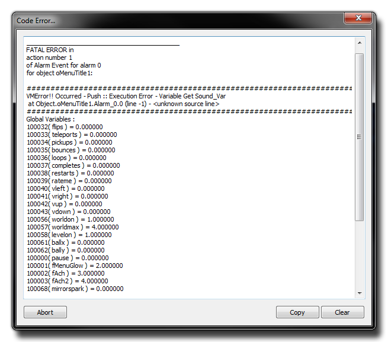
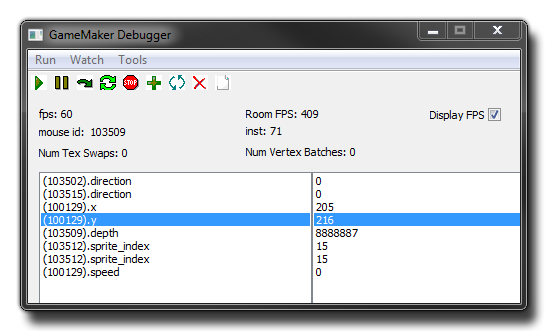
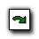
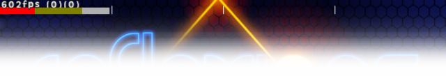
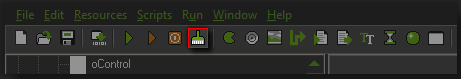

Debugging 调试
这一节讲述了调试工具的用法以及如何发现和纠正游戏中的错误。
This section outlines the debug tool and how to correct and detect errors in your game.
GameMaker:Studio 内建了一种叫做 GML 的编程语言，并且一旦当你熟悉了用 GameMaker 开发游戏的方法，你就会想要用 GML 来大幅扩展你游戏的方方面面，也就意味着你需要使用这种语言来给你的游戏编写代码。
但是只要你一开始写起代码来，你就一定会出错——写错了变量名，传入错误的参数，或者用错了函数——有些错误光靠脚本编辑器的语法检查还发现不了（更多关于代码编辑器的信息请参见 Scripts）。这也就意味着这些错误只有你在运行游戏的时候才会显现出来，即便如此有时候还是很难确定到底是哪里出了问题！从另一个方面来说，有时候知道你的代码在特定的设备上具体是如何执行的也是很有必要的，包括你的房间里究竟有哪些实例，你创建了哪些全局变量，或者其它各种细节问题。
现在你可以通过在游戏中添加各种“调试代码”来检查各种你想知道的事情。有些代码可以在屏幕上实时的显示你想知道的信息，有些可以让你在出现错误的时候显示相关信息。但是通常你需要花费很大的功夫来显示各种信息来定位错误出现的位置。为了更好的调试代码， GameMaker:Studio 提供了一种特殊的游戏运行模式称为 调试模式。在这种模式下会有一个全面的错误报告系统来实时的显示各种信息帮助你追踪游戏中出现的任何错误。
GameMaker:Studio has a built-in programming language called GML, and once you become more familiar with how GameMaker works, you will want to use it to its fullest extent,
meaning that you will need to program aspects of your game in this language.
However, when programming code it can be very easy to make mistakes - using the wrong variables, passing the wrong arguments, or using the wrong functions - which are not always detected by
the syntax checker that is included with the script editor (for more information on the script editor see Scripts). This means that these mistakes
will only become apparent when you actually run your game, and even then it can sometimes be difficult to know exactly what is going wrong! It can also be of vital importance to know how your game
is performing on the chosen device, as well as see what instances are in the room, what global variables have been created and a whole host of other details.
Now, you can check a lot of these things yourself by adding in "debug code" to your games that displays on-screen the information you require, or that exists when there is an error, but this is often a
lot of work and if you aren't sure where the problem is then it can be a time consuming case of trial and error to track down your bug. For that, GameMaker:Studio has a special run mode called
Debug Mode as well as a comprehensive error reporting system which displays messages at run time to help you track down any problems with your game.
Error Reporting 错误报告
当游戏脚本执行的过程中出现了错误会出现如下图所示的错误报告对话框：
When an error occurs during the execution of a script this is reported with an onscreen message, much like the one shown below :

大多数的消息的格式都是相同的。首先是错误类型，错误发生所在的实例和事件，然后是一系列的编译器信息解释了更多关于错误的具体细节，最后是一个当前存在的全部的全局变量、实例和局部变量的列表。在对话框的最下面有几个按钮。Abort 按钮会终止游戏的执行，Copy 按钮可以把错误信息复制到剪贴板中，Clear 按钮可以清除对话框中的错误信息。错误报告提供的信息是非常有用的，因为它提供了导致你游戏崩溃的直接原因，但是它不会报告那些不易察觉的bug，同时也不会提供任何关于你游戏执行效率的信息。如果你需要这些信息，你就需要使用 调试模式。
Most error messages follow the same outline, with a message stating the type of error, the instance and event in which the error was encountered, then a series of compiler details that explain the error
in a lot more depth and, finally, a list of all the declared global, instance and local variables in your game at that point. At the very bottom is the Abort button which will abort the game, as
well as the Copy button (which copies the error into the clipboard) and the Clear button which clears the error messages from the window. The information provided by the error reporting
is very important as it detects and reports the large, syntax related bugs that are going to cause your finished game to crash, but it won't report more subtle bugs, nor does it give feedback on performance...
for that you need to use the Debug Mode.
Debug Mode 调试模式
如果你想要更仔细的检查你的游戏，你可以用调试模式来运行它。当你进入调试模式的时候，会弹出这样的一个对话框，在这个对话框里你可以查看从全局动作到单个实例中的单个变量的值在内的全部东西。这个对话框看起来会是下面这样：
If you need to check things more carefully, you can run the game in debug mode. When you do, a window will open along with your game in which you can monitor how everything is working, from the global performance, right down to the values of individual variables in individual instances. The actual debug window looks like this :

在对话框的顶端有以下几个下拉菜单：
At the top you have three drop down menus :
- Run : 在这个菜单里你可以暂停和继续、单步执行、停止或重启你的游戏。
- Watch : 这个菜单可以让你添加、修改、删除或清空变量监控。要获得在表达式中使用的实例id，你只需要把鼠标移到对象的上面，它的id就会在下方的 Mouse id 处显示出来。
- Tools : 在这个菜单里你可以查看游戏中的所有实例、所有全局变量、某个实例的全部变量、编译器输出的信息以及你使用 show_debug_message() 函数输出的任何信息。
- Run : Here you will find options to pause and restart the game, run through it step by step, stop it or restart it.
- Watch : This menu contains options to add, change, delete, and clear expressions. You can find the instance id for an expression by placing the mouse over an instance in the current game room and the number that comes up in the debug mode main window beside Mouse id is the identifier for that instance.
- Tools : From here you can call up a list of all instances in the game to watch, you can watch all global variables, all instance variables of a specific instance and you can also view information from the compiler and any messages that you have sent with the function show_debug_message().
在调试界面最上方还有几个按钮让你更方便的使用某些调试功能：
Some of these functions are also available as buttons at the top of the main debug screen to make access to the commands easier :
Play : 当你暂停游戏时，点击这个按钮会让游戏恢复运行。
Pause : 暂停游戏。

Step : 在游戏暂停状态下，点击这个按钮会让你的游戏执行一个 step。
Restart : 重启游戏。
Stop : 停止游戏并退出调试。
Add : 增加一个表达式到监控列表中。
Change : 修改一个监控表达式。
Clear : 清空监控列表。
Play : This starts the game again after it has been paused.
Pause : Pauses the game.
Step : This advances the game 1 step at a time when the game has been paused.
Restart : restarts the game.
Stop : This stops the game and exits debug mode.
Add : This adds an expression to the list for watching.
Change : This can be used to change a watched expression.
Clear : This clears all expressions from the watched list.
Now, although that's all fairly useful, it can sometimes be a bit difficult to get the instance id from the game room if you want to watch an instance or a variable from within an instance, so you may also hold down
<Ctrl> and then Left Click on any instance within the game room to call up the instance properties, where you can find all the information on that instance. Not only that but if you
double click on a variable within the instance properties, this will automatically be added to the watched expressions list. In this way you can quickly and easily get to see how your instances are behaving
with a view to fixing any bugs that may exist.
Checking Performance
When running a game in debug mode, you can also see how your game performs and get an overview of how much memory, CPU power and GPU power your game is using.
Below the buttons on the main window you can find the Room Speed (as specified in the room editor) and the FPS (frames per second). These values are often confused, but basically one is the
number of game steps that GameMaker:Studio is completing in a second, while the second is the number of CPU steps that GameMaker:Studio is completing in a second, and this value is
generally much higher than the room speed, but will drop as your game gets more complex and uses more processing power to maintain the set room speed.
You also have three other pieces of information available in the main debug window, with the first being the number of instances currently active in the room (the ones that have been deactivated through code
will not be counted), and then beneath that you have the Num Tex Swaps, which shows how many times your game is swapping textures per game tick (the time it takes game maker to run all events is a
game tick, and the number of game ticks per second is set by the room speed), and to the right of that you have the Num Vertex Batches which is how many times the game is sending off texture batches to
the GPU per game tick.
Finally you also have a helpful graphic CPU/GPU usage bar in the actual game window itself (along with the current fps value). This bar is split into sections, with each section being 1/60th of a second. As you
can see from the image below, the bar is made up of various colors with white being the GPU left over time, red being the time it takes to run the step event, and yellow
the amount of time it takes to draw everything to the screen. In this way, you can see how efficiently your game runs, and get a visual cue as to how it is using the available resources.

Clearing the Cache
GameMaker:Studio has an asset compiler cache which stores sprites, sounds, object data, etc... between builds of your game. This greatly increases build time as each asset only has to be
re-created only when it has changed. However, this cache can become "stale" and odd behaviour can creep into your games, like the wrong sound playing when something happens, or graphics becoming corrupted.
When this happens it's time to clear the asset compiler cache using the "broom" icon at the top of the screen:

This will clear all cached files and the next test run or final build will recreate all the files for your game from scratch. Note that you should generally do this anyway every few builds, and always before
building a final executable package.